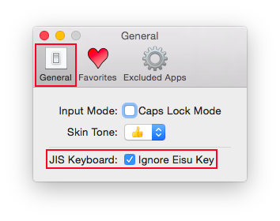

Install
- Run “Emoji IM Installer.pkg”.

- Open System Preferences.

- Choose “Keyboard” Preferences.
- Choose “Input Sources” tab and click “+” button (and also check “Show Input menu in menu bar”).
- Choose “English” and “Emoji IM”, and click “Add”.
- Make sure “Emoji IM” is added.
Uninstall
- Open System Preferences.
- Choose “Keyboard” Preferences.
- Choose “Input Source” tab and “Emoji IM”, and click “-” button.
- Reboot system.
- Remove Emoji IM.app from
/Library/Input Methods.
Usage
- Choose “Emoji IM” in Input menu.
- Type Emoji's name in UPPERCASE (type with Shift key or turn on Caps Lock key).
- Candidates window is shown.
- To select emoji, type Tab/Shift-Tab, Up arrow key/Down arrow key or Control-p/Control-n.
- To input a selected emoji, type Enter or double-click.
- If you pressed Option key at this time, hexadecimal code point is inputted instead of emoji.
Emoji searching is ended when you type lowercase characters, hit Enter key or Escape key.
Caps Lock Mode
In Caps Lock Mode, you can only input Emojis when Caps Lock is on.
- Choose “Emoji IM” from Input menu.
- Choose “Preferences...” from Input menu.
- Check “Caps Lock Mode” in “General” tab.
Skin Tone
You can set skin tone.
- Choose “Emoji IM” from Input menu.
- Choose “Preferences...” from Input menu.
- Choose “Skin Tone” pop up button in “General” tab.
Ignore Eisu Key (for Apple JIS Keyboard)
If you use Apple JIS keyboard and you type Eisu key, a whitespace character is inputted unintentionally. To ignore Eisu key event:
- Choose “Emoji IM” from Input menu.
- Open “Preferences...” from Input menu.
- Check “Ignore Eisu Key” in “General” tab.

Register Favorites
You can register custom name of emojis:
- Choose “Emoji IM” from Input menu.
- Choose “Preferences...” from Input menu.
- Choose “Favorites” tab.
- Click “+” button.
- Input custom name to “Replace” text field and emoji to “With” text field.
- Click “OK” button.
Excluded Applications
You can register excluded apps to not enter emoji mode:
- Choose “Emoji IM” from Input menu.
- Choose “Preferences...” from Input menu.
- Choose “Excluded Apps” tab.
- Click “+” button.

- Choose applications you want to add to excluded apps, and click “Open” button.
Look up Emoji's name
To look up emoji's name:
- Choose “Show Character Viewer” from input menu.
- Look up emojis's name.